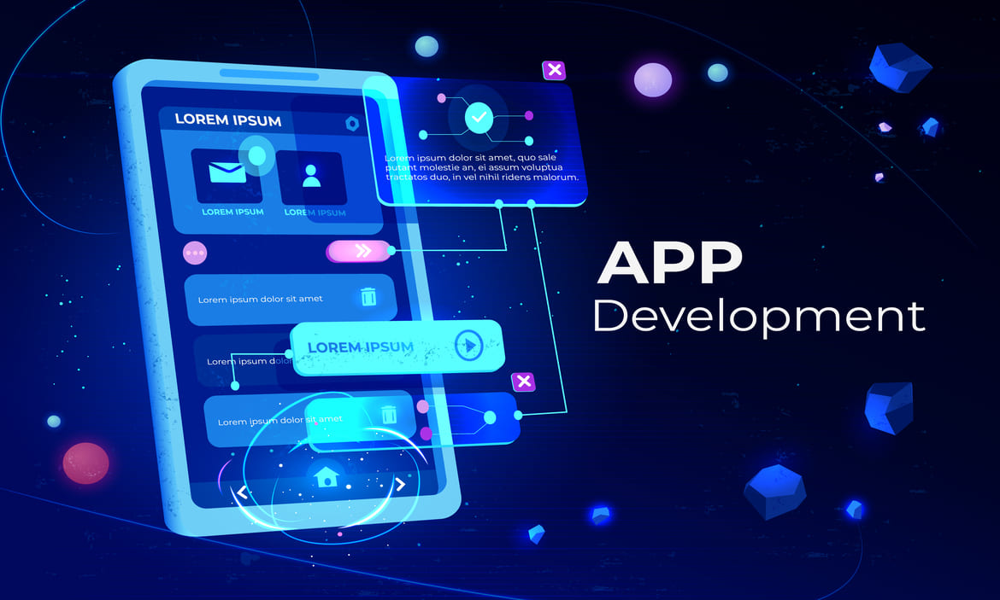

App Development Projects
Looking for Mobile App Development Process? Quality Results in 1 Minute or Less! The Best Resources. Completely Secure. Unlimited Access. Privacy Friendly. Always Facts. Results & Answers. Services: Best Results, Explore Now, New Sources, Best in Search
Learn More